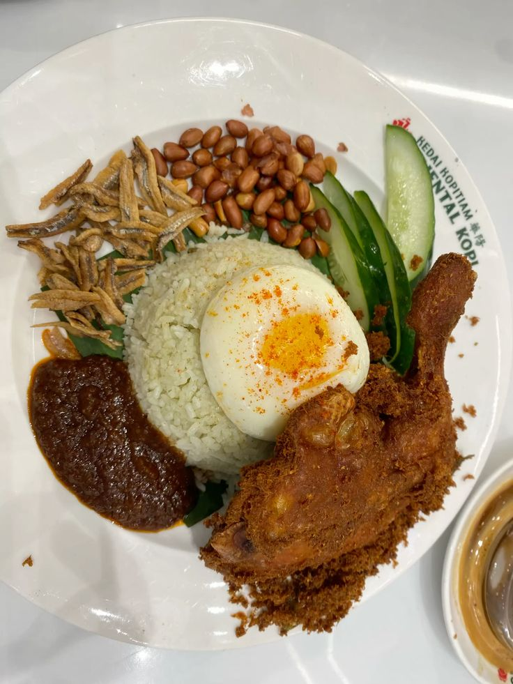
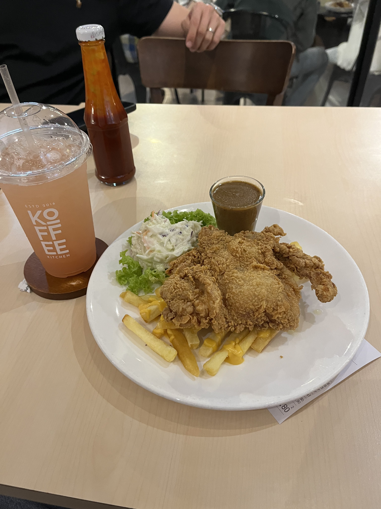
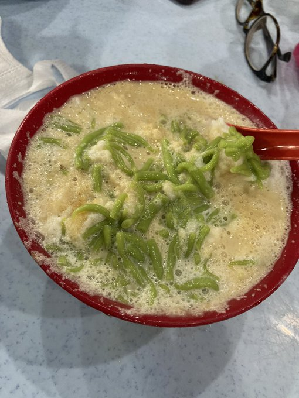
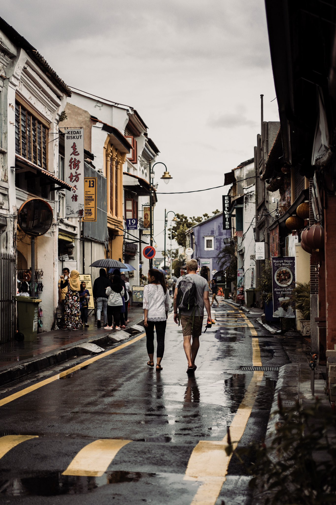
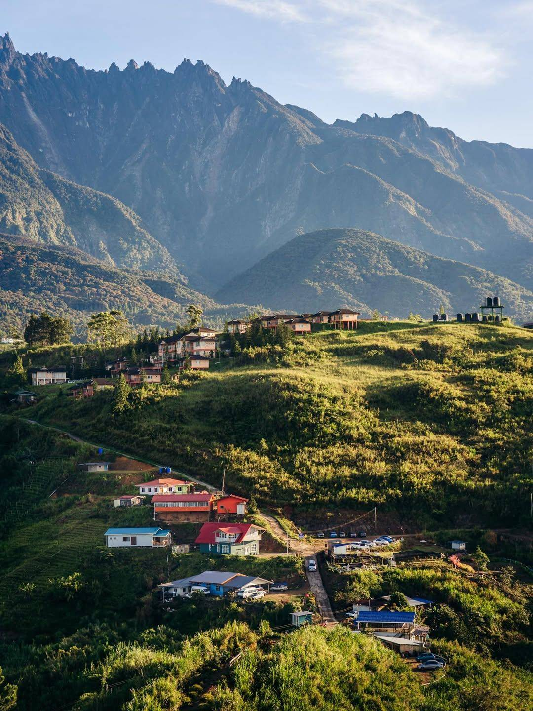

Malaysia is a Southeast Asian country occupying parts of the Malay Peninsula and the island of Borneo. It's known for its beaches, rainforests, and a mix of Malay, Chinese, Indian, and European cultural influences. The capital, Kuala Lumpur, is home to colonial buildings, bustling shopping districts, and the iconic Petronas Twin Towers. Malaysia is a melting pot of cultures, offering a diverse and rich experience for all its visitors.

Considered the national dish, this fragrant rice dish cooked in coconut milk is served with a spicy sambal, fried anchovies, peanuts, and a boiled egg.
Rating: ⭐⭐⭐⭐☆
Spice Level: 🌶️🌶️🌶️

a local dish created by the Hainanese community by blending local and Western influences. Fusion food is one of the strongest symbols of Malaysian identity.
Rating: ⭐⭐⭐⭐⭐
Spice Level: 🌶️

Cendol is a popular, refreshing dessert. It consists of shaved ice topped with coconut milk, green rice flour jelly, and a drizzle of rich palm sugar syrup. It's a sweet, creamy, and cooling treat, perfect for Malaysia's hot weather.
Rating: ⭐⭐⭐⭐☆
Spice Level: ❌
Discover places to try Nasi Lemak, Chicken Chop, and Cendol!

Penang, Georgetown
Batu Caves

Kundasang, Sabah